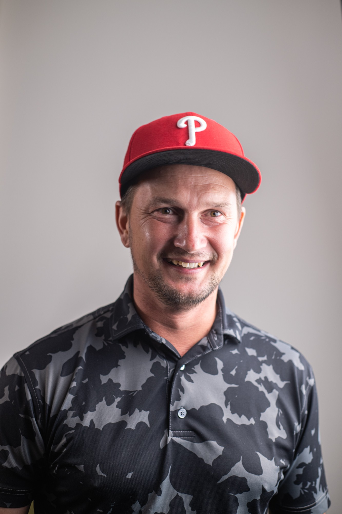
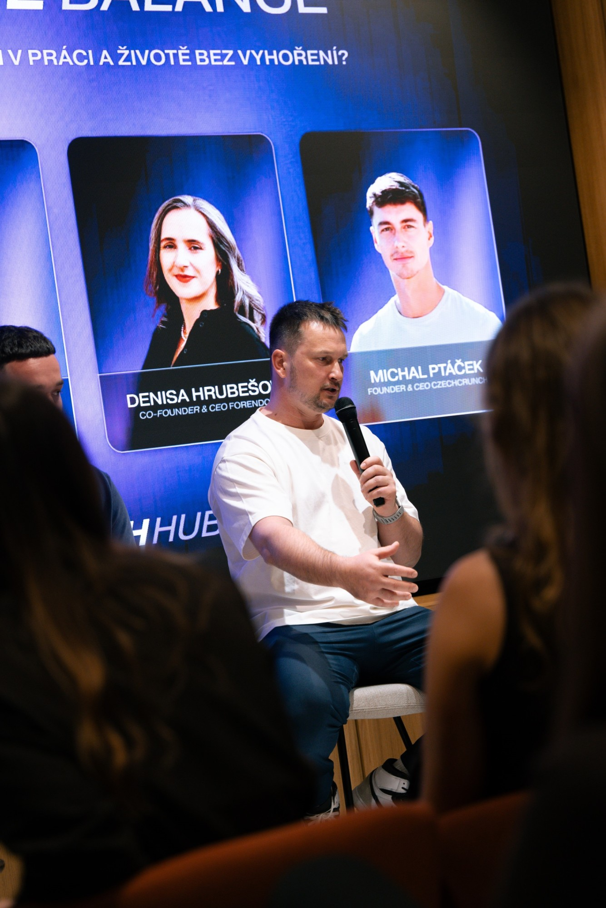
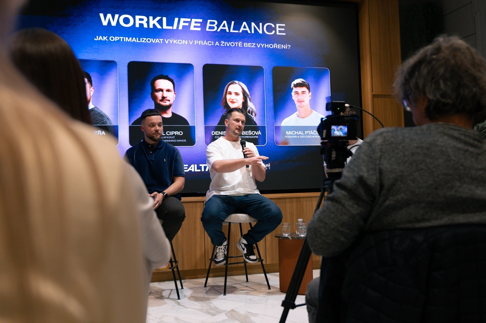

Sportovci i byznys
Mentální koučink na míru.
Začínáme diagnostikou, podle ní navrhneme plán a pak pravidelně trénujeme zvládání stresu, soustředění a sebedůvěru.
Mentální kouč · Winning Minds
Pomáhám sportovcům, týmům i lidem z byznysu podávat výkon ve chvíli, kdy na tom nejvíc záleží.

O mně
Začínal jsem jako tenisový trenér. Znovu a znovu jsem viděl, že o výsledku často nerozhoduje technika, ale hlava. Dnes vedu Winning Minds a pomáhám lidem zůstat klidní ve chvíli, kdy na tom nejvíc záleží.
Sportovci i byznys
Začínáme diagnostikou, podle ní navrhneme plán a pak pravidelně trénujeme zvládání stresu, soustředění a sebedůvěru.
Týmy a kluby
Týmová sezení i individuální podpora hráčů, s konkrétními kroky a pravidelnou zpětnou vazbou.
Kde to začalo
Jako tenisový trenér jsem poznal, jak moc o výsledku rozhoduje hlava.
Hobby
Po večerech stavím věci s AI. Včetně tohohle webu.

Příběh
Mentální přípravu jsem studoval doma i v zahraničí. Ve Winning Minds s partnerem Milanem Večeřou připravujeme vrcholové sportovce, týmy, kluby i jednotlivce. Tradiční koučink doplňujeme o diagnostiku stresu, práci s dechem a neurovizuální trénink, takže se neřídíme jen pocitem, ale i daty.
Rád hraju golf a po večerech stavím věci s AI. Tenhle web vznikl přesně tak.
Metoda
S Milanem Večeřou jsme dali mentálnímu tréninku strukturu. Každá spolupráce prochází třemi fázemi.
Zjistíme, jak reagujete na stres a kde vám utíká energie i soustředění. Víme, od čeho se odrazit.
Podle výsledků navrhneme trénink přesně pro vás: práci s dechem, soustředěním, sebedůvěrou i rutinami před výkonem.
Trénujeme průběžně a pokrok znovu vyhodnocujeme. Mentální forma se buduje stejně jako ta fyzická.
Zkušenosti
Vedu společnost, která s Milanem Večeřou zajišťuje mentální přípravu pro vrcholové sportovce, týmy, kluby i jednotlivce.
Mentální příprava týmu v boji o medaile. Pracujeme na výkonu jednotlivců i na psychické hygieně celého kádru.
Mentální příprava před zápasem na Oktagonu 81 v pražské O2 areně.
Na kurtu jsem viděl, jak moc o výsledku rozhoduje hlava. Odtud vedla cesta k mentální přípravě.
Mentální trénink, koučink a moderní neurověda, na kterých stavím svou práci.
Je dobře, že kluci spadli z obláčku rychle dolů.
Michal Cipro o volejbalistech Kladna · Celý rozhovor
Média a vystoupení

Panelová diskuse
Diskuse s Denisou Hrubešovou (Forendors) a Michalem Ptáčkem (CzechCrunch) o tom, jak podávat výkon dlouhodobě a nevyhořet.
Napište mi pár vět o tom, co právě řešíte. Ozvu se a domluvíme si úvodní konzultaci.